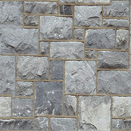
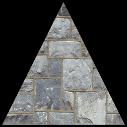
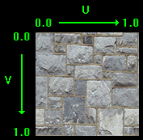
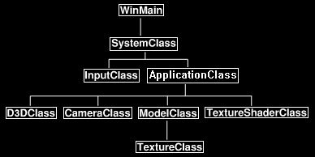

This tutorial will explain how to use texturing in DirectX 11.
Texturing allows us to add photorealism to our scenes by applying photographs and other images onto polygon faces.
For example, in this tutorial we will take the following image:

And then apply it to the polygon from the previous tutorial to produce the following:

The format of the textures we will be using are .tga files. This is the common graphics format that supports red, green, blue, and alpha channels.
You can create and edit Targa files with generally any image editing software.
And the file format is mostly straight forward.
And before we get into the code, we should discuss how texture mapping works.
To map pixels from the .tga image onto the polygon we use what is called the Texel Coordinate System.
This system converts the integer value of the pixel into a floating-point value between 0.0f and 1.0f.
For example, if a texture width is 256 pixels wide then the first pixel will map to 0.0f, the 256th pixel
will map to 1.0f, and a middle pixel of 128 would map to 0.5f.
In the texel coordinate system the width value is named "U" and the height value is named "V".
The width goes from 0.0 on the left to 1.0 on the right.
The height goes from 0.0 on the top to 1.0 on the bottom.
For example, top left would be denoted as U 0.0, V 0.0 and bottom right would be denoted as U 1.0, V 1.0.
I have made a diagram below to illustrate this system:

Now that we have a basic understanding of how to map textures onto polygons, we can look at the updated frame work for this tutorial:

The changes to the frame work since the previous tutorial are the new TextureClass which is inside
ModelClass and the new TextureShaderClass which replaces the ColorShaderClass.
We'll start the code section by looking at the new HLSL texture shader first.
Texture.vs
The texture vertex shader is similar to the previous color shader except that there have been some changes to accommodate texturing.
////////////////////////////////////////////////////////////////////////////////
// Filename: texture.vs
////////////////////////////////////////////////////////////////////////////////
/////////////
// GLOBALS //
/////////////
cbuffer MatrixBuffer
{
matrix worldMatrix;
matrix viewMatrix;
matrix projectionMatrix;
};
We are no longer using color in our vertex type and have instead moved to using texture coordinates.
Since texture coordinates take a U and V float coordinate, we use float2 as its type.
The semantic for texture coordinates is TEXCOORD0 for vertex shaders and pixel shaders.
You can change the zero to any number to indicate which set of coordinates you are working with as multiple texture coordinates are allowed.
//////////////
// TYPEDEFS //
//////////////
struct VertexInputType
{
float4 position : POSITION;
float2 tex : TEXCOORD0;
};
struct PixelInputType
{
float4 position : SV_POSITION;
float2 tex : TEXCOORD0;
};
////////////////////////////////////////////////////////////////////////////////
// Vertex Shader
////////////////////////////////////////////////////////////////////////////////
PixelInputType TextureVertexShader(VertexInputType input)
{
PixelInputType output;
// Change the position vector to be 4 units for proper matrix calculations.
input.position.w = 1.0f;
// Calculate the position of the vertex against the world, view, and projection matrices.
output.position = mul(input.position, worldMatrix);
output.position = mul(output.position, viewMatrix);
output.position = mul(output.position, projectionMatrix);
The only difference in the texture vertex shader in comparison to the color vertex shader from the previous
tutorial is that instead of taking a copy of the color from the input vertex we take a copy of the texture
coordinates and pass them to the pixel shader.
// Store the texture coordinates for the pixel shader.
output.tex = input.tex;
return output;
}
Texture.ps
////////////////////////////////////////////////////////////////////////////////
// Filename: texture.ps
////////////////////////////////////////////////////////////////////////////////
The texture pixel shader has two global variables. The first is Texture2D shaderTexture which is the texture resource.
This will be our texture resource that will be used for rendering the texture on the model.
The second new variable is the SamplerState SampleType.
The sampler state allows us to modify how the pixels are written to the polygon face when shaded.
For example, if the polygon is really far away and only makes up 8 pixels on the screen then we use the sample state to
figure out which pixels or what combination of pixels will actually be drawn from the original texture.
The original texture may be 256 pixels by 256 pixels so deciding which pixels get drawn is really important to ensure that the
texture still looks decent on the really small polygon face. We will setup the sampler state in the TextureShaderClass also
and then attach it to the resource pointer so this pixel shader can use it to determine which sample of pixels to draw.
/////////////
// GLOBALS //
/////////////
Texture2D shaderTexture : register(t0);
SamplerState SampleType : register(s0);
The PixelInputType for the texture pixel shader is also modified using texture coordinates instead of the color values.
//////////////
// TYPEDEFS //
//////////////
struct PixelInputType
{
float4 position : SV_POSITION;
float2 tex : TEXCOORD0;
};
The pixel shader has been modified so that it now uses the HLSL sample function.
The sample function uses the sampler state we defined above and the texture coordinates for this pixel.
It uses these two variables to determine and return the pixel value for this UV location on the polygon face.
////////////////////////////////////////////////////////////////////////////////
// Pixel Shader
////////////////////////////////////////////////////////////////////////////////
float4 TexturePixelShader(PixelInputType input) : SV_TARGET
{
float4 textureColor;
// Sample the pixel color from the texture using the sampler at this texture coordinate location.
textureColor = shaderTexture.Sample(SampleType, input.tex);
return textureColor;
}
Textureshaderclass.h
The TextureShaderClass is just an updated version of the ColorShaderClass from the previous tutorial.
This class will be used to draw the 3D models using vertex and pixel shaders.
////////////////////////////////////////////////////////////////////////////////
// Filename: textureshaderclass.h
////////////////////////////////////////////////////////////////////////////////
#ifndef _TEXTURESHADERCLASS_H_
#define _TEXTURESHADERCLASS_H_
//////////////
// INCLUDES //
//////////////
#include <d3d11.h>
#include <d3dcompiler.h>
#include <directxmath.h>
#include <fstream>
using namespace DirectX;
using namespace std;
////////////////////////////////////////////////////////////////////////////////
// Class name: TextureShaderClass
////////////////////////////////////////////////////////////////////////////////
class TextureShaderClass
{
private:
struct MatrixBufferType
{
XMMATRIX world;
XMMATRIX view;
XMMATRIX projection;
};
public:
TextureShaderClass();
TextureShaderClass(const TextureShaderClass&);
~TextureShaderClass();
bool Initialize(ID3D11Device*, HWND);
void Shutdown();
bool Render(ID3D11DeviceContext*, int, XMMATRIX, XMMATRIX, XMMATRIX, ID3D11ShaderResourceView*);
private:
bool InitializeShader(ID3D11Device*, HWND, WCHAR*, WCHAR*);
void ShutdownShader();
void OutputShaderErrorMessage(ID3D10Blob*, HWND, WCHAR*);
bool SetShaderParameters(ID3D11DeviceContext*, XMMATRIX, XMMATRIX, XMMATRIX, ID3D11ShaderResourceView*);
void RenderShader(ID3D11DeviceContext*, int);
private:
ID3D11VertexShader* m_vertexShader;
ID3D11PixelShader* m_pixelShader;
ID3D11InputLayout* m_layout;
ID3D11Buffer* m_matrixBuffer;
There is a new private variable for the sampler state pointer. This pointer will be used to interface with the texture shader.
ID3D11SamplerState* m_sampleState;
};
#endif
Textureshaderclass.cpp
////////////////////////////////////////////////////////////////////////////////
// Filename: textureshaderclass.cpp
////////////////////////////////////////////////////////////////////////////////
#include "textureshaderclass.h"
TextureShaderClass::TextureShaderClass()
{
m_vertexShader = 0;
m_pixelShader = 0;
m_layout = 0;
m_matrixBuffer = 0;
The new sampler variable is set to null in the class constructor.
m_sampleState = 0;
}
TextureShaderClass::TextureShaderClass(const TextureShaderClass& other)
{
}
TextureShaderClass::~TextureShaderClass()
{
}
bool TextureShaderClass::Initialize(ID3D11Device* device, HWND hwnd)
{
bool result;
wchar_t vsFilename[128];
wchar_t psFilename[128];
int error;
The new texture.vs and texture.ps HLSL files are loaded for this shader.
// Set the filename of the vertex shader.
error = wcscpy_s(vsFilename, 128, L"../Engine/texture.vs");
if(error != 0)
{
return false;
}
// Set the filename of the pixel shader.
error = wcscpy_s(psFilename, 128, L"../Engine/texture.ps");
if(error != 0)
{
return false;
}
// Initialize the vertex and pixel shaders.
result = InitializeShader(device, hwnd, vsFilename, psFilename);
if(!result)
{
return false;
}
return true;
}
The Shutdown function calls the release of the shader variables.
void TextureShaderClass::Shutdown()
{
// Shutdown the vertex and pixel shaders as well as the related objects.
ShutdownShader();
return;
}
The Render function now takes a new parameter called texture which is the pointer to the texture resource.
This is then sent into the SetShaderParameters function so that the texture can be set in the shader and then used for rendering.
bool TextureShaderClass::Render(ID3D11DeviceContext* deviceContext, int indexCount, XMMATRIX worldMatrix, XMMATRIX viewMatrix,
XMMATRIX projectionMatrix, ID3D11ShaderResourceView* texture)
{
bool result;
// Set the shader parameters that it will use for rendering.
result = SetShaderParameters(deviceContext, worldMatrix, viewMatrix, projectionMatrix, texture);
if(!result)
{
return false;
}
// Now render the prepared buffers with the shader.
RenderShader(deviceContext, indexCount);
return true;
}
InitializeShader sets up the texture shader.
bool TextureShaderClass::InitializeShader(ID3D11Device* device, HWND hwnd, WCHAR* vsFilename, WCHAR* psFilename)
{
HRESULT result;
ID3D10Blob* errorMessage;
ID3D10Blob* vertexShaderBuffer;
ID3D10Blob* pixelShaderBuffer;
D3D11_INPUT_ELEMENT_DESC polygonLayout[2];
unsigned int numElements;
D3D11_BUFFER_DESC matrixBufferDesc;
We have a new variable to hold the description of the texture sampler that will be setup in this function.
D3D11_SAMPLER_DESC samplerDesc;
// Initialize the pointers this function will use to null.
errorMessage = 0;
vertexShaderBuffer = 0;
pixelShaderBuffer = 0;
Load in the new texture vertex and pixel shaders.
// Compile the vertex shader code.
result = D3DCompileFromFile(vsFilename, NULL, NULL, "TextureVertexShader", "vs_5_0", D3D10_SHADER_ENABLE_STRICTNESS, 0,
&vertexShaderBuffer, &errorMessage);
if(FAILED(result))
{
// If the shader failed to compile it should have writen something to the error message.
if(errorMessage)
{
OutputShaderErrorMessage(errorMessage, hwnd, vsFilename);
}
// If there was nothing in the error message then it simply could not find the shader file itself.
else
{
MessageBox(hwnd, vsFilename, L"Missing Shader File", MB_OK);
}
return false;
}
// Compile the pixel shader code.
result = D3DCompileFromFile(psFilename, NULL, NULL, "TexturePixelShader", "ps_5_0", D3D10_SHADER_ENABLE_STRICTNESS, 0,
&pixelShaderBuffer, &errorMessage);
if(FAILED(result))
{
// If the shader failed to compile it should have writen something to the error message.
if(errorMessage)
{
OutputShaderErrorMessage(errorMessage, hwnd, psFilename);
}
// If there was nothing in the error message then it simply could not find the file itself.
else
{
MessageBox(hwnd, psFilename, L"Missing Shader File", MB_OK);
}
return false;
}
// Create the vertex shader from the buffer.
result = device->CreateVertexShader(vertexShaderBuffer->GetBufferPointer(), vertexShaderBuffer->GetBufferSize(), NULL, &m_vertexShader);
if(FAILED(result))
{
return false;
}
// Create the pixel shader from the buffer.
result = device->CreatePixelShader(pixelShaderBuffer->GetBufferPointer(), pixelShaderBuffer->GetBufferSize(), NULL, &m_pixelShader);
if(FAILED(result))
{
return false;
}
The input layout has changed as we now have a texture element instead of color.
The first position element stays unchanged but the SemanticName and Format of the second element have been changed to TEXCOORD and DXGI_FORMAT_R32G32_FLOAT.
These two changes will now align this layout with our new VertexType in both the ModelClass definition and the typedefs in the shader files.
// Create the vertex input layout description.
// This setup needs to match the VertexType stucture in the ModelClass and in the shader.
polygonLayout[0].SemanticName = "POSITION";
polygonLayout[0].SemanticIndex = 0;
polygonLayout[0].Format = DXGI_FORMAT_R32G32B32_FLOAT;
polygonLayout[0].InputSlot = 0;
polygonLayout[0].AlignedByteOffset = 0;
polygonLayout[0].InputSlotClass = D3D11_INPUT_PER_VERTEX_DATA;
polygonLayout[0].InstanceDataStepRate = 0;
polygonLayout[1].SemanticName = "TEXCOORD";
polygonLayout[1].SemanticIndex = 0;
polygonLayout[1].Format = DXGI_FORMAT_R32G32_FLOAT;
polygonLayout[1].InputSlot = 0;
polygonLayout[1].AlignedByteOffset = D3D11_APPEND_ALIGNED_ELEMENT;
polygonLayout[1].InputSlotClass = D3D11_INPUT_PER_VERTEX_DATA;
polygonLayout[1].InstanceDataStepRate = 0;
// Get a count of the elements in the layout.
numElements = sizeof(polygonLayout) / sizeof(polygonLayout[0]);
// Create the vertex input layout.
result = device->CreateInputLayout(polygonLayout, numElements, vertexShaderBuffer->GetBufferPointer(),
vertexShaderBuffer->GetBufferSize(), &m_layout);
if(FAILED(result))
{
return false;
}
// Release the vertex shader buffer and pixel shader buffer since they are no longer needed.
vertexShaderBuffer->Release();
vertexShaderBuffer = 0;
pixelShaderBuffer->Release();
pixelShaderBuffer = 0;
// Setup the description of the dynamic matrix constant buffer that is in the vertex shader.
matrixBufferDesc.Usage = D3D11_USAGE_DYNAMIC;
matrixBufferDesc.ByteWidth = sizeof(MatrixBufferType);
matrixBufferDesc.BindFlags = D3D11_BIND_CONSTANT_BUFFER;
matrixBufferDesc.CPUAccessFlags = D3D11_CPU_ACCESS_WRITE;
matrixBufferDesc.MiscFlags = 0;
matrixBufferDesc.StructureByteStride = 0;
// Create the constant buffer pointer so we can access the vertex shader constant buffer from within this class.
result = device->CreateBuffer(&matrixBufferDesc, NULL, &m_matrixBuffer);
if(FAILED(result))
{
return false;
}
The sampler state description is setup here and then can be passed to the pixel shader after.
The most important element of the texture sampler description is Filter.
Filter will determine how it decides which pixels will be used or combined to create the final look of the texture on the polygon face.
In the example here I use D3D11_FILTER_MIN_MAG_MIP_LINEAR which is more expensive in terms of processing but gives the best visual result.
It tells the sampler to use linear interpolation for minification, magnification, and mip-level sampling.
AddressU and AddressV are set to Wrap which ensures that the coordinates stay between 0.0f and 1.0f.
Anything outside of that wraps around and is placed between 0.0f and 1.0f.
All other settings for the sampler state description are defaults.
// Create a texture sampler state description.
samplerDesc.Filter = D3D11_FILTER_MIN_MAG_MIP_LINEAR;
samplerDesc.AddressU = D3D11_TEXTURE_ADDRESS_WRAP;
samplerDesc.AddressV = D3D11_TEXTURE_ADDRESS_WRAP;
samplerDesc.AddressW = D3D11_TEXTURE_ADDRESS_WRAP;
samplerDesc.MipLODBias = 0.0f;
samplerDesc.MaxAnisotropy = 1;
samplerDesc.ComparisonFunc = D3D11_COMPARISON_ALWAYS;
samplerDesc.BorderColor[0] = 0;
samplerDesc.BorderColor[1] = 0;
samplerDesc.BorderColor[2] = 0;
samplerDesc.BorderColor[3] = 0;
samplerDesc.MinLOD = 0;
samplerDesc.MaxLOD = D3D11_FLOAT32_MAX;
// Create the texture sampler state.
result = device->CreateSamplerState(&samplerDesc, &m_sampleState);
if (FAILED(result))
{
return false;
}
return true;
}
The ShutdownShader function releases all the variables used in the TextureShaderClass.
void TextureShaderClass::ShutdownShader()
{
The ShutdownShader function now releases the new sampler state that was created during initialization.
// Release the sampler state.
if (m_sampleState)
{
m_sampleState->Release();
m_sampleState = 0;
}
// Release the matrix constant buffer.
if(m_matrixBuffer)
{
m_matrixBuffer->Release();
m_matrixBuffer = 0;
}
// Release the layout.
if(m_layout)
{
m_layout->Release();
m_layout = 0;
}
// Release the pixel shader.
if(m_pixelShader)
{
m_pixelShader->Release();
m_pixelShader = 0;
}
// Release the vertex shader.
if(m_vertexShader)
{
m_vertexShader->Release();
m_vertexShader = 0;
}
return;
}
OutputShaderErrorMessage writes out errors to a text file if the HLSL shader could not be loaded.
void TextureShaderClass::OutputShaderErrorMessage(ID3D10Blob* errorMessage, HWND hwnd, WCHAR* shaderFilename)
{
char* compileErrors;
unsigned long long bufferSize, i;
ofstream fout;
// Get a pointer to the error message text buffer.
compileErrors = (char*)(errorMessage->GetBufferPointer());
// Get the length of the message.
bufferSize = errorMessage->GetBufferSize();
// Open a file to write the error message to.
fout.open("shader-error.txt");
// Write out the error message.
for(i=0; i<bufferSize; i++)
{
fout << compileErrors[i];
}
// Close the file.
fout.close();
// Release the error message.
errorMessage->Release();
errorMessage = 0;
// Pop a message up on the screen to notify the user to check the text file for compile errors.
MessageBox(hwnd, L"Error compiling shader. Check shader-error.txt for message.", shaderFilename, MB_OK);
return;
}
SetShaderParameters function now takes in a pointer to a texture resource and then assigns it to the shader using the new texture resource pointer.
Note that the texture has to be set before rendering of the buffer occurs.
bool TextureShaderClass::SetShaderParameters(ID3D11DeviceContext* deviceContext, XMMATRIX worldMatrix, XMMATRIX viewMatrix,
XMMATRIX projectionMatrix, ID3D11ShaderResourceView* texture)
{
HRESULT result;
D3D11_MAPPED_SUBRESOURCE mappedResource;
MatrixBufferType* dataPtr;
unsigned int bufferNumber;
// Transpose the matrices to prepare them for the shader.
worldMatrix = XMMatrixTranspose(worldMatrix);
viewMatrix = XMMatrixTranspose(viewMatrix);
projectionMatrix = XMMatrixTranspose(projectionMatrix);
// Lock the constant buffer so it can be written to.
result = deviceContext->Map(m_matrixBuffer, 0, D3D11_MAP_WRITE_DISCARD, 0, &mappedResource);
if(FAILED(result))
{
return false;
}
// Get a pointer to the data in the constant buffer.
dataPtr = (MatrixBufferType*)mappedResource.pData;
// Copy the matrices into the constant buffer.
dataPtr->world = worldMatrix;
dataPtr->view = viewMatrix;
dataPtr->projection = projectionMatrix;
// Unlock the constant buffer.
deviceContext->Unmap(m_matrixBuffer, 0);
// Set the position of the constant buffer in the vertex shader.
bufferNumber = 0;
// Finanly set the constant buffer in the vertex shader with the updated values.
deviceContext->VSSetConstantBuffers(bufferNumber, 1, &m_matrixBuffer);
The SetShaderParameters function has been modified from the previous tutorial to include setting the texture in the pixel shader now.
// Set shader texture resource in the pixel shader.
deviceContext->PSSetShaderResources(0, 1, &texture);
return true;
}
RenderShader calls the shader technique to render the polygons.
void TextureShaderClass::RenderShader(ID3D11DeviceContext* deviceContext, int indexCount)
{
// Set the vertex input layout.
deviceContext->IASetInputLayout(m_layout);
// Set the vertex and pixel shaders that will be used to render this triangle.
deviceContext->VSSetShader(m_vertexShader, NULL, 0);
deviceContext->PSSetShader(m_pixelShader, NULL, 0);
The RenderShader function has been changed to include setting the sample state in the pixel shader before rendering.
// Set the sampler state in the pixel shader.
deviceContext->PSSetSamplers(0, 1, &m_sampleState);
// Render the triangle.
deviceContext->DrawIndexed(indexCount, 0, 0);
return;
}
Textureclass.h
The TextureClass encapsulates the loading, unloading, and accessing of a single texture resource.
For each texture needed an object of this class must be instantiated.
////////////////////////////////////////////////////////////////////////////////
// Filename: textureclass.h
////////////////////////////////////////////////////////////////////////////////
#ifndef _TEXTURECLASS_H_
#define _TEXTURECLASS_H_
//////////////
// INCLUDES //
//////////////
#include <d3d11.h>
#include <stdio.h>
////////////////////////////////////////////////////////////////////////////////
// Class name: TextureClass
////////////////////////////////////////////////////////////////////////////////
class TextureClass
{
private:
We define the Targa file header structure here to make reading in the data easier.
struct TargaHeader
{
unsigned char data1[12];
unsigned short width;
unsigned short height;
unsigned char bpp;
unsigned char data2;
};
public:
TextureClass();
TextureClass(const TextureClass&);
~TextureClass();
bool Initialize(ID3D11Device*, ID3D11DeviceContext*, char*);
void Shutdown();
ID3D11ShaderResourceView* GetTexture();
int GetWidth();
int GetHeight();
private:
Here we have our Targa reading function.
If you wanted to support more formats you would add reading functions here.
bool LoadTarga32Bit(char*);
private:
This class has five member variables.
The first one holds the raw Targa data read straight in from the file.
The second variable called m_texture will hold the structured texture data that DirectX will use for rendering.
And the third variable is the resource view that the shader uses to access the texture data when drawing.
The width and height are the dimensions of the texture.
unsigned char* m_targaData;
ID3D11Texture2D* m_texture;
ID3D11ShaderResourceView* m_textureView;
int m_width, m_height;
};
#endif
Textureclass.cpp
////////////////////////////////////////////////////////////////////////////////
// Filename: textureclass.cpp
////////////////////////////////////////////////////////////////////////////////
#include "textureclass.h"
Initialize the three pointers to null in the class constructor.
TextureClass::TextureClass()
{
m_targaData = 0;
m_texture = 0;
m_textureView = 0;
}
TextureClass::TextureClass(const TextureClass& other)
{
}
TextureClass::~TextureClass()
{
}
The Initialize functions take as input the Direct3D device and the name of the Targa image file.
It will first load the Targa data into an array.
Then it will create a texture and load the Targa data into it in the correct format (Targa images are upside by default and need to be reversed).
Then once the texture is loaded it will create a resource view of the texture for the shader to use for drawing.
bool TextureClass::Initialize(ID3D11Device* device, ID3D11DeviceContext* deviceContext, char* filename)
{
bool result;
int height, width;
D3D11_TEXTURE2D_DESC textureDesc;
HRESULT hResult;
unsigned int rowPitch;
D3D11_SHADER_RESOURCE_VIEW_DESC srvDesc;
So first we call the TextureClass::LoadTarga32Bit function to load the Targa file into the m_targaData array.
// Load the targa image data into memory.
result = LoadTarga32Bit(filename);
if(!result)
{
return false;
}
Next, we need to setup our description of the DirectX texture that we will load the Targa data into.
We use the height and width from the Targa image data, and set the format to be a 32-bit RGBA texture. We set the SampleDesc to default.
Then we set the Usage to D3D11_USAGE_DEFAULT which is the better performing memory, which we will also explain a bit more about down below.
And finally, we set the MipLevels, BindFlags, and MiscFlags to the settings required for Mipmaped textures.
Once the description is complete, we call CreateTexture2D to create an empty texture for us.
The next step will be to copy the Targa data into that empty texture.
// Setup the description of the texture.
textureDesc.Height = m_height;
textureDesc.Width = m_width;
textureDesc.MipLevels = 0;
textureDesc.ArraySize = 1;
textureDesc.Format = DXGI_FORMAT_R8G8B8A8_UNORM;
textureDesc.SampleDesc.Count = 1;
textureDesc.SampleDesc.Quality = 0;
textureDesc.Usage = D3D11_USAGE_DEFAULT;
textureDesc.BindFlags = D3D11_BIND_SHADER_RESOURCE | D3D11_BIND_RENDER_TARGET;
textureDesc.CPUAccessFlags = 0;
textureDesc.MiscFlags = D3D11_RESOURCE_MISC_GENERATE_MIPS;
// Create the empty texture.
hResult = device->CreateTexture2D(&textureDesc, NULL, &m_texture);
if(FAILED(hResult))
{
return false;
}
// Set the row pitch of the targa image data.
rowPitch = (m_width * 4) * sizeof(unsigned char);
Here we use UpdateSubresource to actually do the copying of the Targa data array into the DirectX texture.
If you will remember from the previous tutorial, we used Map and Unmap to copy our matrices in the ModelClass into the matrix constant buffer, and we could have done the same here with our texture data.
And in fact, using Map and Unmap is generally a lot quicker than using UpdateSubresource, however both loading methods have specific purposes and you need to choose correctly which one to use for performance reasons.
The recommendation is that you use Map and Unmap for data that is going to be reloaded each frame or on a very regular basis.
And you should use UpdateSubresource for something that will be loaded once or that gets loaded rarely during loading sequences.
The reason being is that UpdateSubresource puts the data into higher speed memory that gets cache retention preference since it knows you aren't going to remove or reload it anytime soon.
We let DirectX also know by using D3D11_USAGE_DEFAULT when we are going to load using UpdateSubresource.
And Map and Unmap will put the data into memory locations that will not be cached as DirectX is expecting that data to be overwritten shortly.
And that is why we use D3D11_USAGE_DYNAMIC to notify DirectX that this type of data is transient.
// Copy the targa image data into the texture.
deviceContext->UpdateSubresource(m_texture, 0, NULL, m_targaData, rowPitch, 0);
After the texture is loaded, we create a shader resource view which allows us to have a pointer to set the texture in shaders.
In the description we also set two important Mipmap variables which will give us the full range of Mipmap levels for high quality texture rendering at any distance.
Once the shader resource view is created, we call GenerateMips and it creates the Mipmaps for us, however if you want you can load your own Mipmap levels in manually if you are looking for even better quality.
// Setup the shader resource view description.
srvDesc.Format = textureDesc.Format;
srvDesc.ViewDimension = D3D11_SRV_DIMENSION_TEXTURE2D;
srvDesc.Texture2D.MostDetailedMip = 0;
srvDesc.Texture2D.MipLevels = -1;
// Create the shader resource view for the texture.
hResult = device->CreateShaderResourceView(m_texture, &srvDesc, &m_textureView);
if(FAILED(hResult))
{
return false;
}
// Generate mipmaps for this texture.
deviceContext->GenerateMips(m_textureView);
// Release the targa image data now that the image data has been loaded into the texture.
delete [] m_targaData;
m_targaData = 0;
return true;
}
The Shutdown function releases the texture data and the three pointers are set to null.
void TextureClass::Shutdown()
{
// Release the texture view resource.
if(m_textureView)
{
m_textureView->Release();
m_textureView = 0;
}
// Release the texture.
if(m_texture)
{
m_texture->Release();
m_texture = 0;
}
// Release the targa data.
if(m_targaData)
{
delete [] m_targaData;
m_targaData = 0;
}
return;
}
GetTexture is a helper function to provide easy access to the texture view for any shaders that require it for rendering.
ID3D11ShaderResourceView* TextureClass::GetTexture()
{
return m_textureView;
}
This is our Targa image loading function.
Once again note that Targa images are stored upside down and need to be flipped before using.
So here we will open the file, read it into an array, and then take that array data and load it into the m_targaData array in the correct order.
Note we are purposely only dealing with 32-bit Targa files that have alpha channels, this function will reject Targa's that are saved as 24-bit.
bool TextureClass::LoadTarga32Bit(char* filename)
{
int error, bpp, imageSize, index, i, j, k;
FILE* filePtr;
unsigned int count;
TargaHeader targaFileHeader;
unsigned char* targaImage;
// Open the targa file for reading in binary.
error = fopen_s(&filePtr, filename, "rb");
if(error != 0)
{
return false;
}
// Read in the file header.
count = (unsigned int)fread(&targaFileHeader, sizeof(TargaHeader), 1, filePtr);
if(count != 1)
{
return false;
}
// Get the important information from the header.
m_height = (int)targaFileHeader.height;
m_width = (int)targaFileHeader.width;
bpp = (int)targaFileHeader.bpp;
// Check that it is 32 bit and not 24 bit.
if(bpp != 32)
{
return false;
}
// Calculate the size of the 32 bit image data.
imageSize = m_width * m_height * 4;
// Allocate memory for the targa image data.
targaImage = new unsigned char[imageSize];
// Read in the targa image data.
count = (unsigned int)fread(targaImage, 1, imageSize, filePtr);
if(count != imageSize)
{
return false;
}
// Close the file.
error = fclose(filePtr);
if(error != 0)
{
return false;
}
// Allocate memory for the targa destination data.
m_targaData = new unsigned char[imageSize];
// Initialize the index into the targa destination data array.
index = 0;
// Initialize the index into the targa image data.
k = (m_width * m_height * 4) - (m_width * 4);
// Now copy the targa image data into the targa destination array in the correct order since the targa format is stored upside down and also is not in RGBA order.
for(j=0; j<m_height; j++)
{
for(i=0; i<m_width; i++)
{
m_targaData[index + 0] = targaImage[k + 2]; // Red.
m_targaData[index + 1] = targaImage[k + 1]; // Green.
m_targaData[index + 2] = targaImage[k + 0]; // Blue
m_targaData[index + 3] = targaImage[k + 3]; // Alpha
// Increment the indexes into the targa data.
k += 4;
index += 4;
}
// Set the targa image data index back to the preceding row at the beginning of the column since its reading it in upside down.
k -= (m_width * 8);
}
// Release the targa image data now that it was copied into the destination array.
delete [] targaImage;
targaImage = 0;
return true;
}
int TextureClass::GetWidth()
{
return m_width;
}
int TextureClass::GetHeight()
{
return m_height;
}
Modelclass.h
The ModelClass has changed since the previous tutorial so that it can now accommodate texturing.
////////////////////////////////////////////////////////////////////////////////
// Filename: modelclass.h
////////////////////////////////////////////////////////////////////////////////
#ifndef _MODELCLASS_H_
#define _MODELCLASS_H_
//////////////
// INCLUDES //
//////////////
#include <d3d11.h>
#include <directxmath.h>
using namespace DirectX;
The TextureClass header is now included in the ModelClass header.
///////////////////////
// MY CLASS INCLUDES //
///////////////////////
#include "textureclass.h"
////////////////////////////////////////////////////////////////////////////////
// Class name: ModelClass
////////////////////////////////////////////////////////////////////////////////
class ModelClass
{
private:
The VertexType has replaced the color component with a texture coordinate component.
The texture coordinates are now replacing the green color that was used in the previous tutorial.
struct VertexType
{
XMFLOAT3 position;
XMFLOAT2 texture;
};
public:
ModelClass();
ModelClass(const ModelClass&);
~ModelClass();
bool Initialize(ID3D11Device*, ID3D11DeviceContext*, char*);
void Shutdown();
void Render(ID3D11DeviceContext*);
int GetIndexCount();
The ModelClass now has a GetTexture function so it can pass its own texture resource to shaders that will draw this model.
ID3D11ShaderResourceView* GetTexture();
private:
bool InitializeBuffers(ID3D11Device*);
void ShutdownBuffers();
void RenderBuffers(ID3D11DeviceContext*);
ModelClass also now has both a private LoadTexture and ReleaseTexture for loading and releasing the texture that will be used to render this model.
bool LoadTexture(ID3D11Device*, ID3D11DeviceContext*, char*);
void ReleaseTexture();
private:
ID3D11Buffer *m_vertexBuffer, *m_indexBuffer;
int m_vertexCount, m_indexCount;
The m_Texture variable is used for loading, releasing, and accessing the texture resource for this model.
TextureClass* m_Texture;
};
#endif
Modelclass.cpp
////////////////////////////////////////////////////////////////////////////////
// Filename: modelclass.cpp
////////////////////////////////////////////////////////////////////////////////
#include "modelclass.h"
ModelClass::ModelClass()
{
m_vertexBuffer = 0;
m_indexBuffer = 0;
The class constructor now initializes the new texture object to null.
m_Texture = 0;
}
ModelClass::ModelClass(const ModelClass& other)
{
}
ModelClass::~ModelClass()
{
}
Initialize now takes as input the file name of the texture that the model will be using as well as the device context.
bool ModelClass::Initialize(ID3D11Device* device, ID3D11DeviceContext* deviceContext, char* textureFilename)
{
bool result;
// Initialize the vertex and index buffers.
result = InitializeBuffers(device);
if(!result)
{
return false;
}
The Initialize function calls a new private function that will load the texture.
// Load the texture for this model.
result = LoadTexture(device, deviceContext, textureFilename);
if (!result)
{
return false;
}
return true;
}
void ModelClass::Shutdown()
{
The Shutdown function now calls the new private function to release the texture object that was loaded during initialization.
// Release the model texture.
ReleaseTexture();
// Shutdown the vertex and index buffers.
ShutdownBuffers();
return;
}
void ModelClass::Render(ID3D11DeviceContext* deviceContext)
{
// Put the vertex and index buffers on the graphics pipeline to prepare them for drawing.
RenderBuffers(deviceContext);
return;
}
int ModelClass::GetIndexCount()
{
return m_indexCount;
}
GetTexture is a new function that returns the model texture resource. The texture shader will need access to this texture to render the model.
ID3D11ShaderResourceView* ModelClass::GetTexture()
{
return m_Texture->GetTexture();
}
bool ModelClass::InitializeBuffers(ID3D11Device* device)
{
VertexType* vertices;
unsigned long* indices;
D3D11_BUFFER_DESC vertexBufferDesc, indexBufferDesc;
D3D11_SUBRESOURCE_DATA vertexData, indexData;
HRESULT result;
// Set the number of vertices in the vertex array.
m_vertexCount = 3;
// Set the number of indices in the index array.
m_indexCount = 3;
// Create the vertex array.
vertices = new VertexType[m_vertexCount];
// Create the index array.
indices = new unsigned long[m_indexCount];
The vertex array now has a texture coordinate component instead of a color component.
The texture vector is always U first and V second.
For example, the first texture coordinate is bottom left of the triangle which corresponds to U 0.0, V 1.0.
Use the diagram at the top of this page to figure out what your coordinates need to be.
Note that you can change the coordinates to map any part of the texture to any part of the polygon face.
In this tutorial I'm just doing a direct mapping for simplicity reasons.
// Load the vertex array with data.
vertices[0].position = XMFLOAT3(-1.0f, -1.0f, 0.0f); // Bottom left.
vertices[0].texture = XMFLOAT2(0.0f, 1.0f);
vertices[1].position = XMFLOAT3(0.0f, 1.0f, 0.0f); // Top middle.
vertices[1].texture = XMFLOAT2(0.5f, 0.0f);
vertices[2].position = XMFLOAT3(1.0f, -1.0f, 0.0f); // Bottom right.
vertices[2].texture = XMFLOAT2(1.0f, 1.0f);
// Load the index array with data.
indices[0] = 0; // Bottom left.
indices[1] = 1; // Top middle.
indices[2] = 2; // Bottom right.
// Set up the description of the static vertex buffer.
vertexBufferDesc.Usage = D3D11_USAGE_DEFAULT;
vertexBufferDesc.ByteWidth = sizeof(VertexType) * m_vertexCount;
vertexBufferDesc.BindFlags = D3D11_BIND_VERTEX_BUFFER;
vertexBufferDesc.CPUAccessFlags = 0;
vertexBufferDesc.MiscFlags = 0;
vertexBufferDesc.StructureByteStride = 0;
// Give the subresource structure a pointer to the vertex data.
vertexData.pSysMem = vertices;
vertexData.SysMemPitch = 0;
vertexData.SysMemSlicePitch = 0;
// Now create the vertex buffer.
result = device->CreateBuffer(&vertexBufferDesc, &vertexData, &m_vertexBuffer);
if(FAILED(result))
{
return false;
}
// Set up the description of the static index buffer.
indexBufferDesc.Usage = D3D11_USAGE_DEFAULT;
indexBufferDesc.ByteWidth = sizeof(unsigned long) * m_indexCount;
indexBufferDesc.BindFlags = D3D11_BIND_INDEX_BUFFER;
indexBufferDesc.CPUAccessFlags = 0;
indexBufferDesc.MiscFlags = 0;
indexBufferDesc.StructureByteStride = 0;
// Give the subresource structure a pointer to the index data.
indexData.pSysMem = indices;
indexData.SysMemPitch = 0;
indexData.SysMemSlicePitch = 0;
// Create the index buffer.
result = device->CreateBuffer(&indexBufferDesc, &indexData, &m_indexBuffer);
if(FAILED(result))
{
return false;
}
// Release the arrays now that the vertex and index buffers have been created and loaded.
delete [] vertices;
vertices = 0;
delete [] indices;
indices = 0;
return true;
}
void ModelClass::ShutdownBuffers()
{
// Release the index buffer.
if(m_indexBuffer)
{
m_indexBuffer->Release();
m_indexBuffer = 0;
}
// Release the vertex buffer.
if(m_vertexBuffer)
{
m_vertexBuffer->Release();
m_vertexBuffer = 0;
}
return;
}
void ModelClass::RenderBuffers(ID3D11DeviceContext* deviceContext)
{
unsigned int stride;
unsigned int offset;
// Set vertex buffer stride and offset.
stride = sizeof(VertexType);
offset = 0;
// Set the vertex buffer to active in the input assembler so it can be rendered.
deviceContext->IASetVertexBuffers(0, 1, &m_vertexBuffer, &stride, &offset);
// Set the index buffer to active in the input assembler so it can be rendered.
deviceContext->IASetIndexBuffer(m_indexBuffer, DXGI_FORMAT_R32_UINT, 0);
// Set the type of primitive that should be rendered from this vertex buffer, in this case triangles.
deviceContext->IASetPrimitiveTopology(D3D11_PRIMITIVE_TOPOLOGY_TRIANGLELIST);
return;
}
LoadTexture is a new private function that will create the texture object and then initialize it with the input file name provided.
This function is called during initialization.
bool ModelClass::LoadTexture(ID3D11Device* device, ID3D11DeviceContext* deviceContext, char* filename)
{
bool result;
// Create and initialize the texture object.
m_Texture = new TextureClass;
result = m_Texture->Initialize(device, deviceContext, filename);
if (!result)
{
return false;
}
return true;
}
The ReleaseTexture function will release the texture object that was created and loaded during the LoadTexture function.
void ModelClass::ReleaseTexture()
{
// Release the texture object.
if(m_Texture)
{
m_Texture->Shutdown();
delete m_Texture;
m_Texture = 0;
}
return;
}
Applicationclass.h
////////////////////////////////////////////////////////////////////////////////
// Filename: applicationclass.h
////////////////////////////////////////////////////////////////////////////////
#ifndef _APPLICATIONCLASS_H_
#define _APPLICATIONCLASS_H_
///////////////////////
// MY CLASS INCLUDES //
///////////////////////
#include "d3dclass.h"
#include "cameraclass.h"
#include "modelclass.h"
The ApplicationClass now includes the new TextureShaderClass header and the ColorShaderClass header has been removed.
#include "textureshaderclass.h"
/////////////
// GLOBALS //
/////////////
const bool FULL_SCREEN = false;
const bool VSYNC_ENABLED = true;
const float SCREEN_DEPTH = 1000.0f;
const float SCREEN_NEAR = 0.3f;
////////////////////////////////////////////////////////////////////////////////
// Class name: ApplicationClass
////////////////////////////////////////////////////////////////////////////////
class ApplicationClass
{
public:
ApplicationClass();
ApplicationClass(const ApplicationClass&);
~ApplicationClass();
bool Initialize(int, int, HWND);
void Shutdown();
bool Frame();
private:
bool Render();
private:
D3DClass* m_Direct3D;
CameraClass* m_Camera;
ModelClass* m_Model;
A new TextureShaderClass private object has been added.
TextureShaderClass* m_TextureShader;
};
#endif
Applilcationclass.cpp
////////////////////////////////////////////////////////////////////////////////
// Filename: applicationclass.cpp
////////////////////////////////////////////////////////////////////////////////
#include "applicationclass.h"
The m_TextureShader variable is set to null in the constructor.
ApplicationClass::ApplicationClass()
{
m_Direct3D = 0;
m_Camera = 0;
m_Model = 0;
m_TextureShader = 0;
}
ApplicationClass::ApplicationClass(const ApplicationClass& other)
{
}
ApplicationClass::~ApplicationClass()
{
}
bool ApplicationClass::Initialize(int screenWidth, int screenHeight, HWND hwnd)
{
char textureFilename[128];
bool result;
// Create the Direct3D object.
m_Direct3D = new D3DClass;
if(!m_Direct3D)
{
return false;
}
// Initialize the Direct3D object.
result = m_Direct3D->Initialize(screenWidth, screenHeight, VSYNC_ENABLED, hwnd, FULL_SCREEN, SCREEN_DEPTH, SCREEN_NEAR);
if(!result)
{
MessageBox(hwnd, L"Could not initialize Direct3D.", L"Error", MB_OK);
return false;
}
// Create the camera object.
m_Camera = new CameraClass;
if (!m_Camera)
{
return false;
}
// Set the initial position of the camera.
m_Camera->SetPosition(0.0f, 0.0f, -5.0f);
// Create and initialize the model object.
m_Model = new ModelClass;
The ModelClass::Initialize function now takes in the name of the texture that will be used for rendering the model, as well as the device context.
// Set the name of the texture file that we will be loading.
strcpy_s(textureFilename, "../Engine/data/stone01.tga");
result = m_Model->Initialize(m_Direct3D->GetDevice(), m_Direct3D->GetDeviceContext(), textureFilename);
if(!result)
{
MessageBox(hwnd, L"Could not initialize the model object.", L"Error", MB_OK);
return false;
}
The new TextureShaderClass object is created and initialized.
// Create and initialize the texture shader object.
m_TextureShader = new TextureShaderClass;
result = m_TextureShader->Initialize(m_Direct3D->GetDevice(), hwnd);
if(!result)
{
MessageBox(hwnd, L"Could not initialize the texture shader object.", L"Error", MB_OK);
return false;
}
return true;
}
void ApplicationClass::Shutdown()
{
The TextureShaderClass object is also released in the Shutdown function.
// Release the texture shader object.
if (m_TextureShader)
{
m_TextureShader->Shutdown();
delete m_TextureShader;
m_TextureShader = 0;
}
// Release the model object.
if (m_Model)
{
m_Model->Shutdown();
delete m_Model;
m_Model = 0;
}
// Release the camera object.
if (m_Camera)
{
delete m_Camera;
m_Camera = 0;
}
// Release the D3D object.
if(m_Direct3D)
{
m_Direct3D->Shutdown();
delete m_Direct3D;
m_Direct3D = 0;
}
return;
}
bool ApplicationClass::Frame()
{
bool result;
// Render the graphics scene.
result = Render();
if(!result)
{
return false;
}
return true;
}
bool ApplicationClass::Render()
{
XMMATRIX worldMatrix, viewMatrix, projectionMatrix;
bool result;
// Clear the buffers to begin the scene.
m_Direct3D->BeginScene(0.0f, 0.0f, 0.0f, 1.0f);
// Generate the view matrix based on the camera's position.
m_Camera->Render();
// Get the world, view, and projection matrices from the camera and d3d objects.
m_Direct3D->GetWorldMatrix(worldMatrix);
m_Camera->GetViewMatrix(viewMatrix);
m_Direct3D->GetProjectionMatrix(projectionMatrix);
// Put the model vertex and index buffers on the graphics pipeline to prepare them for drawing.
m_Model->Render(m_Direct3D->GetDeviceContext());
The texture shader is called now instead of the color shader to render the model.
Notice it also takes the texture resource pointer from the model so the texture shader has access to the texture from the model object.
// Render the model using the texture shader.
result = m_TextureShader->Render(m_Direct3D->GetDeviceContext(), m_Model->GetIndexCount(), worldMatrix, viewMatrix, projectionMatrix, m_Model->GetTexture());
if (!result)
{
return false;
}
// Present the rendered scene to the screen.
m_Direct3D->EndScene();
return true;
}
Summary
You should now understand the basics of loading a texture, mapping it to a polygon face, and then rendering it with a shader.
To Do Exercises
1. Re-compile the code and ensure that a texture mapped triangle does appear on your screen. Press escape to quit once done.
2. Create your own tga texture and place it in the same directory with stone01.tga.
Inside the ApplicationClass::Initialize function change the model initialization to have your texture name and then re-compile and run the program.
3. Change the code to create two triangles that form a square. Map the entire texture to this square so that the entire texture shows up correctly on the screen.
4. Move the camera to different distances to see the effect of the MIN_MAG_MIP_LINEAR filter.
5. Try some of the other filters and move the camera to different distances to see the different results.
6. Add a 24-bit Targa reader function so that your TextureClass automatically supports either 32 or 24-bit tga textures.
Source Code
Source Code and Data Files: dx11win10tut05_src.zip